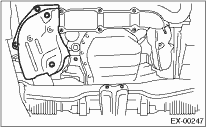
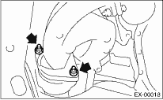

1. Set the vehicle on a lift.
2. Disconnect the ground cable from the battery.

3. Remove the collector cover.
4. Remove the front oxygen (A/F) sensor. 
5. Remove the under cover.
6. Remove the exhaust manifold lower cover (RH).

7. Remove the nuts which hold the front exhaust manifold to joint pipe.

8. Remove the center exhaust pipe.
9. Remove the turbocharger.
10. Take off the joint pipe in the upward direction.